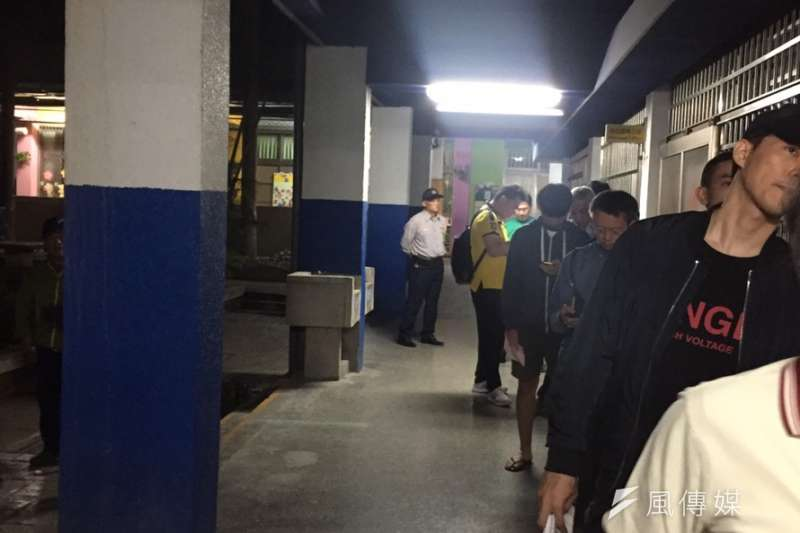
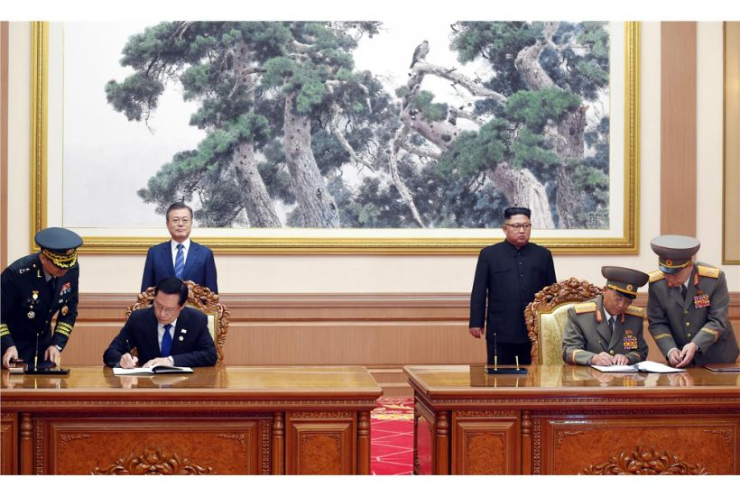
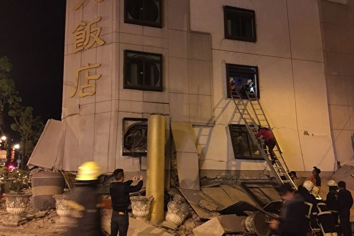
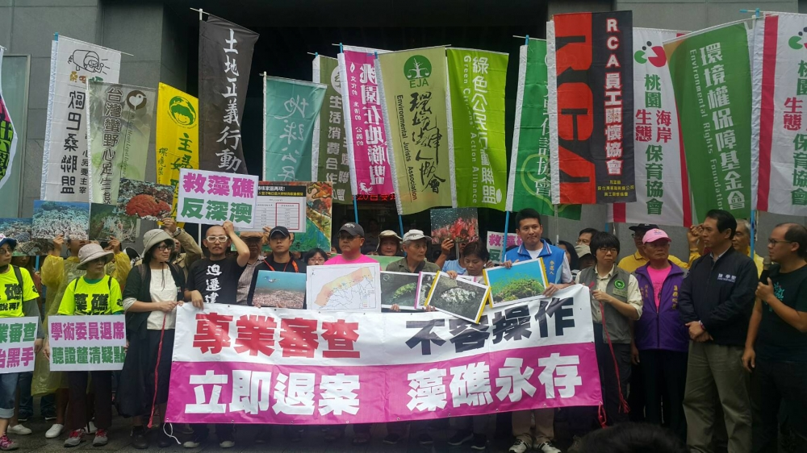

2018 重大新聞
斷交崩盤 台灣地位危及?
從2016年起，台灣的邦交國幾乎是以一年斷一個的速度在減少，2018年更是邦交國提出斷交的高峰期，甚至創下一個月痛失兩國的紀錄，正當大家還沒從五月的雪崩式斷交驚嚇中恢復，八月薩爾瓦多也提出斷交，結束85年的邦誼，台灣在2018年正式邦交國只剩下17個，這樣的速度恐影響台灣在國際的定位，雖然有不少網友認為「省了一筆邦交經費」，但這仍就是開玩笑之餘必須謹慎思考的嚴肅議題。

2018全國公投問題多
2018全國地方公職選舉與公民投票，24日舉行，然而，首度面對10項公投，讓今日不少地方的投票所，都有民眾排上1、2小時，才投到票的情形，甚至到了下午4點投票截止，仍有不少投票所尚未完成投票，更有選民6點後才完成投票。不少4點便完成投票的開票所，完成投票不久後，便開始開票作業，電視媒體也立即轉播報導，形成「邊投票、邊開票」的奇景，引發外界質疑，是否會對尚在投票的選民意向造成影響。

簽《平壤共同宣言》 文金3會和平曙光
第3次「文金會」南韓總統文在寅與北韓領導人金正恩19日簽署《平壤共同宣言》，雙方就朝鮮半島無核化、消除兩韓戰爭風險等達成共識，等同實質已結束韓戰。北韓將永久關閉東倉里測試場，並在特定條件下，同意廢除寧邊核設施；金正恩更答應在「不久後」訪問首爾。此外，針對降低雙方軍事緊張與落實《板門店宣言》，兩韓防長也達成協議。文在寅將於23日飛赴紐約參加聯合國大會期間，會晤美國總統川普。

花蓮規模6強震 7死2百餘傷
花蓮2月4日晚間發生芮氏規模5.8的地震，就在民眾驚魂未定之際，6日深夜再出現規模6.0的地震，花蓮市震度高達7級，這場地震共造成4棟樓房傾斜倒塌，截至7日晚間10時，共造成7人死亡、260人輕重傷、67人失聯。不過地震並未就此終結，氣象局說，未來兩週內都可能出現餘震，規模約在3~5之間。

空污突擊火力發電廠 觀塘藻礁成犧牲品
在嚴重的空污情況下，因電力需求，沉寂一時的「深澳電廠擴建案」再度浮出檯面，隨後，由於觀塘案的通過，深澳電廠也宣布停建。雖然觀塘藻礁的天然氣取代深澳電廠的火力發電，但全台仍有多處火力發電廠，空污仍舊是一大問題。該如何在電力與環境中取得最佳平衡，是目前最重要的課題。